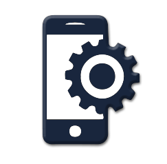
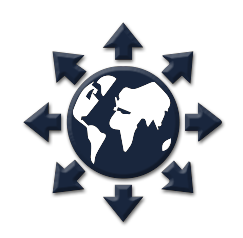

DESARROLLO DE SISTEMAS
Nuestros servicios están basados en el sentido de la responsabilidad y trabajo en equipo de los profesionales que conforman la empresa y en la confianza de nuestra cartera de clientes entre los que se cuentan desde pequeñas empresas y particulares hasta corporativos a nivel nacional.
DESARROLLO DE APLICACIONES

Desarrollamos aplicaciones web para implementar sus necesidades, objetivos o ideas en Internet utilizando las tecnologías más idóneas según su proyecto. Las aplicaciones web pueden ser de acceso público o restringido orientadas a mejorar el servicio con sus colaboradores o clientes.
DESARROLLO WEB

Ya sea un sitio web de comercio electrónico, pagina web, portal de noticias o multimedia, utilizamos técnicas, procesos de calidad y metodologías probadas para ejecutarlas con los mejores resultados. Desde el proceso de trabajo del cliente hasta la manera de mejorarlo. Todo es considerado.
CONSULTORÍA
Ya tienes un sitio web y ninguna de nuestras anteriores ofertas se ajusta a tus necesidades, pero tienes un problema que necesita ser resulto, acércate con nosotros porque estamos seguros que podremos ayudarte.